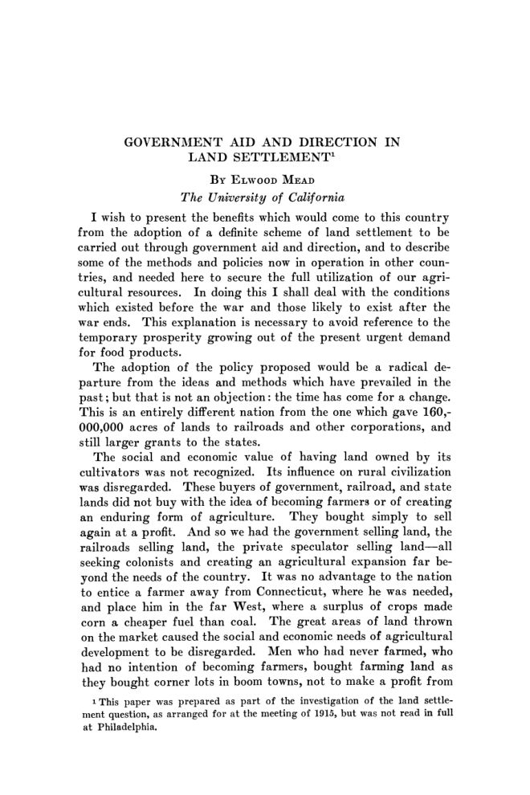

Filadélfia, 1917: lucros extraordinários, terra e o fim do laissez-faire
Leitura: 5 min
Filadélfia, dezembro de 1917: Commons declara morto o laissez-faire, Adams defende o imposto sobre lucros extraordinários, Mead pede colonização dirigida e Seager um serviço nacional de emprego.


Na véspera da sessão em que John Bauer, da Princeton University, apresentaria seu trabalho sobre a avaliação federal das ferrovias, o presidente Wilson assinou a proclamação que punha todas as ferrovias do país sob o controle do governo federal. Bauer acrescentou uma nota ao texto: o plano, com um diretor-geral que manteria a organização de cada companhia, era em substância o que ele tinha em mente, e parecia inconcebível que as linhas, uma vez fundidas num só sistema, voltassem à situação anterior.
A trigésima reunião anual da American Economic Association, em Filadélfia e Haverford, de 27 a 29 de dezembro de 1917, teve como tema geral “Guerra e reconstrução”. O suplemento de março de 1918 da American Economic Review reúne os textos, os debates, as atas e os relatórios. No discurso presidencial, John R. Commons declarou morto o laissez-faire e propôs que o poder público decidisse onde investir o capital da reconstrução.
Como pagar a guerra?
T. S. Adams, da Yale University, abriu a reunião com os impostos federais sobre a renda e os lucros extraordinários aprovados em 3 de outubro de 1917 e defendeu que o imposto sobre lucros acima do normal sobrevivesse à guerra, como a parte do Estado no êxito das empresas. Oito debatedores responderam, entre eles E. R. A. Seligman e Roy G. Blakey. No último dia, B. M. Anderson Jr. e Irving Fisher voltaram ao tema pelo lado dos preços e da moeda, e A. N. Holcombe mostrou a escala do gasto: mais de 21 bilhões de dólares em dotações e autorizações para o ano fiscal de 1918.
Quem deve ficar com a terra?
A sessão sobre a terra partiu do fim da fronteira. Benjamin H. Hibbard, da University of Wisconsin, mostrou que, de 1900 a 1910, a população cresceu 20% e a área em fazendas só 5%; W. J. Spillman, do Departamento de Agricultura, que o valor da terra agrícola por acre subiu 108% na década; e Elwood Mead, da University of California, defendeu a colonização dirigida pelo Estado, nos moldes da Austrália, da Dinamarca e da Irlanda. A associação aprovou a recomendação de que um órgão do governo estudasse o assentamento de soldados e marinheiros na terra ao fim da guerra.
Como mobilizar o trabalho?
Na sessão sobre emprego, Henry R. Seager, da Columbia University, pediu um serviço federal de emprego que coordenasse os escritórios estaduais e municipais; M. B. Hammond, da Ohio State University, contou como a Grã-Bretanha passou do desemprego de agosto de 1914 à falta de braços e à entrada das mulheres na indústria; E. V. Wilcox descreveu o plano do Departamento de Agricultura para a mão de obra rural; e Charles B. Barnes, do serviço de emprego de Nova York, atribuiu a escassez à falta de treinamento e à disputa de operários entre empregadores.
O que mais se discutiu?
Bauer propôs fixar por lei o valor das ferrovias e garantir aos investidores um retorno definido. Edward C. Hayes, da University of Illinois, atacou a teoria da produtividade específica como defesa do laissez-faire; Carleton H. Parker, da University of Washington, pediu que a economia incorporasse a psicologia dos instintos para entender a inquietação operária. Edward P. Costigan, da Tariff Commission, defendeu tratados e tarifas sem discriminação depois da guerra.
Como terminou a reunião?
Na sessão de negócios em Haverford, Irving Fisher foi eleito presidente para 1918, e Allyn A. Young continuou como secretário e tesoureiro. A associação autorizou uma comissão sobre os problemas econômicos da guerra, presidida por Seligman, e outra sobre o poder de compra da moeda, presidida por Fisher.
Na minha leitura
Na minha leitura, a reunião de 1917 registra uma mudança de pergunta. Em vez de discutir se o governo deve intervir, os textos discutem como: com que base medir o lucro normal, com que critério classificar a terra, com que órgão coordenar o emprego, com que valor remunerar as ferrovias. Quase todos os autores pedem antes de tudo informação, sob a forma de censos, avaliações, índices de preços e registros de contratos, e organização administrativa capaz de usá-la.
Glossário
- Imposto sobre lucros extraordinários (excess-profits tax)
- imposto graduado sobre o lucro que excede um retorno considerado normal sobre o capital investido.
- Laissez-faire
- doutrina segundo a qual o governo deve deixar a economia funcionar sem intervenção.
- Contribuição de melhoria (special assessment)
- tributo cobrado dos imóveis valorizados por uma obra pública, para custeá-la.
- Avaliação federal das ferrovias
- levantamento do valor das propriedades ferroviárias pela Interstate Commerce Commission, previsto na lei de 1913.
- Diluição do trabalho
- política britânica de reservar os trabalhadores qualificados às tarefas que só eles podem fazer e preencher as demais com semiqualificados e mulheres.
- Teoria da produtividade específica
- teoria segundo a qual cada fator de produção recebe, em concorrência, o valor do que acrescenta ao produto.
- Cláusula de nação mais favorecida
- compromisso, em tratado comercial, de estender ao parceiro as vantagens tarifárias concedidas a terceiros.
- Números-índice
- medidas da variação média de um conjunto de preços em relação a um período-base.
Artigos (29)
- Economic Reconstruction: Foreign and Domestic Investments: Annual Address of the President — John R. Commons, The University of Wisconsin; discurso presidencial (pp. 5–17). No discurso presidencial, lido na sessão conjunta com a American Political Science Association e a American Sociological Society, Commons parte das origens do laissez-faire: na prática, a ineficiência e a autocracia dos governos do século XVIII; na teoria, a lei natural. A Inglaterra prosperou com a iniciativa privada e amarrou-se à doutrina; a Alemanha construiu outra, em que o Estado substitui a liberdade por incentivos administrados cientificamente. Nos Estados Unidos, a teoria dos direitos naturais virou, diz ele, uma teoria do “barril de toucinho”: o direito igual de cada um a tirar o que puder do governo, da tarifa às obras de rios e portos. A Suprema Corte, nos casos Granger, na avaliação unitária das concessionárias e nas contribuições de melhoria, já formulara uma teoria jurídica do valor como poder. Com o fim da fronteira, o capital especulativo procura países atrasados, sob proteção diplomática e militar. Commons propõe obter o capital da reconstrução com contribuições sobre benefícios especiais, aliviar os impostos das indústrias que disputam capital no mercado mundial e usar o crédito público para comprar e operar indústrias básicas, como rodovias, ferrovias, minas, florestas e quedas d'água. JSTOR · ler o comentário
- Federal Taxes Upon Income and Excess Profits — T. S. Adams, Yale University (pp. 18–35). Adams examina os impostos federais de guerra. O imposto sobre lucros extraordinários aprovado em 3 de outubro de 1917, graduado e incidente sobre a renda “supernormal” medida como percentual do capital investido, representa a vitória do princípio do lucro excedente sobre o do lucro de guerra, que tomaria como base os lucros de 1911–13. Para Adams, o imposto pode ser permanente, porque mede a parte do Estado, sócio silencioso de toda empresa, no êxito acima do normal, e não fere o princípio da capacidade de pagar. Aponta defeitos: o investidor escapa; empresas de capital apenas nominal ficam na alíquota de 8%, baixa para quem lucra com intangíveis; a vantagem da sociedade anônima sobre a sociedade de pessoas, já que os lucros retidos, que em 1917 passariam de cinco bilhões de dólares, não pagam a sobretaxa; e a definição de capital investido, que ignora intangíveis e valorizações. Propõe um órgão de equalização inspirado no conselho de árbitros inglês e a dedução da amortização de instalações de guerra. Conclui que o imposto é instrumento tosco de repressão do consumo, que a lei de 1917 é em geral boa e que o remédio direto contra a inflação é a boa prática bancária. JSTOR · ler o comentário
- Federal Taxes Upon Income and Excess Profits--Discussion — E. M. Patterson, Arthur N. Young, E. R. A. Seligman, Henry H. Bond, Carl G. Barth, Roy G. Blakey, N. I. Stone e R. R. Bowker (pp. 36–54). E. M. Patterson parte da hipótese de uma guerra longa e de custos crescentes. Arthur N. Young elogia a lei de outubro de 1917, mas pede a revogação imediata da cláusula de 8% sobre rendas do trabalho acima de US$ 6 mil e alíquotas maiores sobre rendas não ganhas. Seligman concorda com os fundamentos do texto de Adams. Henry H. Bond, em texto não apresentado na reunião, prefere o imposto sobre lucros de guerra, como na Grã-Bretanha. Carl G. Barth aponta a falta de relação matemática entre as alíquotas do imposto de renda. Blakey, que ajudou a levar ao Congresso o memorial de economistas pelo financiamento por impostos, aceita esperar a aplicação das alíquotas existentes. N. I. Stone contesta a ideia de capital como lucro capitalizado, e R. R. Bowker liga o imposto a um esquema tributário em evolução. JSTOR
- The Utilization of Land Not in Farms — Benjamin H. Hibbard, The University of Wisconsin (pp. 55–64). Hibbard escolhe a terra fora das fazendas como o tema mais básico da colonização. Os Estados Unidos têm pouco menos de 2 bilhões de acres; metade está em fazendas, e do bilhão restante, pouco menos da metade é pública e mais de 500 milhões estão em mãos privadas sem uso agrícola. De 1850 a 1880, a população cresceu 117% e a terra em fazendas, 83%; de 1900 a 1910, 20% e 5%. A base de terra da produção de alimentos se estreitou: o país passou a produzir sete bushels de trigo por habitante em vez de nove. A terra do Meio-Oeste subiu acima do valor produtivo; em Iowa, um estudo indicou que valeria US$ 125 o acre e era vendida a US$ 200, e os arrendatários levavam mais tempo para virar donos. Hibbard pede um levantamento econômico da terra ligado aos levantamentos de solo, uma política para instalar colonos em condições favoráveis e um plano, administrado por uma comissão, para assentar soldados e marinheiros que voltarão da guerra. No curto prazo, diz, mais alimentos devem vir de mais fertilizante, máquinas e trabalho nas fazendas existentes. JSTOR
- Work of the Office of Farm Management Relating to Land Classification and Land Tenure — W. J. Spillman, United States Department of Agriculture (pp. 65–71). Spillman parte do esgotamento das boas terras públicas. Na década encerrada em 1910, o valor de mercado da terra agrícola por acre subiu 108%, enquanto os preços dos produtos agrícolas subiram 67%; a diferença vinha da procura por terra já melhorada de quem antes teria ocupado terra nova. Com a terra como principal fator limitante da agricultura, é preciso fazer o inventário. O Office of Farm Management usa uma classificação por uso, da área total às áreas de lavoura, pastagem e mata, recomendada por um comitê para o censo de 1920. Uma tabulação dos questionários do censo feita pelo escritório indicou que 36% da terra das fazendas estava em lavouras, 33% em pastagens e 31% em matas, terrenos baldios e outros usos. O escritório prepara um atlas da agricultura americana, com seções sobre classificação da terra e propriedade fundiária, e estuda o lote de mata das fazendas, os contratos de arrendamento e a economia dos ranchos. No país pastoril, procura o tamanho de rebanho capaz de sustentar uma família e observa que, sem controle exclusivo da pastagem, nenhum criador tem incentivo para conservá-la. JSTOR
- Government Aid and Direction in Land Settlement — Elwood Mead, The University of California (pp. 72–98). Mead defende um plano de colonização com ajuda e direção do governo. O país, diz, deu 160 milhões de acres a ferrovias e outras empresas e vendeu terra pública a quem queria revender com lucro, e não cultivar; a colonização foi especulativa, esgotou o solo e levou o preço da terra acima do valor produtivo. Em média, a terra agrícola custava quase três vezes mais que no início do século, e o homem de pouco capital tinha cada vez mais dificuldade para comprar uma fazenda. Dinamarca, Irlanda, Nova Zelândia, Austrália e Alemanha, entre outros, compravam grandes áreas, subdividiam-nas em fazendas e lotes para trabalhadores e as vendiam a colonos com pagamento a longo prazo. No estado australiano de Victoria, o título exige que o dono ou alguém da família viva na terra e a cultive oito meses por ano. Mead propõe que os estados dividam com a União a responsabilidade pelos projetos de irrigação, como na Austrália, onde o governo federal empresta aos estados a 4% e eles aos colonos a 5%, e cita a lei de colonização da Califórnia. Pede uma comissão de terras federal e estadual. JSTOR
- Land Utilization--Discussion — Richard T. Ely, G. F. Warren e C. F. Marbut (pp. 99–112). Richard T. Ely, da University of Wisconsin, trata do trabalho para soldados e marinheiros ao fim da guerra e lembra que a questão da terra veio à tona depois de todas as guerras do país. George F. Warren, da Cornell University, organiza o tema em três perguntas: quais são os recursos de terra, quem vai viver na terra e como o agricultor vai adquiri-la, e comenta a classificação proposta para o próximo censo. C. F. Marbut, do Bureau of Soils, observa que os dados do censo descrevem o uso da terra, mas nada dizem diretamente sobre seu caráter. JSTOR
- The Federal Valuation of Railroads in Relation to a Definite Policy of National Railway Control — John Bauer, Princeton University (pp. 113–133). Bauer responde a quem pedia a suspensão da avaliação federal das ferrovias, iniciada pela lei de 1º de março de 1913, cujo custo total ele estima em pelo menos US$ 75 milhões. A avaliação, diz, só se justifica se servir a uma política definida, e a lei não exige sequer que se fixe o valor final de cada ferrovia. Em nota, registra que na véspera da apresentação o presidente Wilson tomou as ferrovias para o governo federal, num plano de supercontrole nacional que lhe parece a política permanente mais desejável, com duas mudanças: o órgão de supercontrole deveria ser a Interstate Commerce Commission, e a compensação aos investidores teria de ser revista. Sua proposta é fixar por lei o valor do investimento e garantir aos investidores um retorno definido sobre ele; com a garantia, estima, o capital novo sairia a cerca de 4%, ante 6% a 8% com o risco nos investidores. As tarifas passariam a seguir as condições dos negócios, e as ferrovias bem situadas entregariam ao público o excedente, uma forma de imposto indireto. A comissão ficaria livre da tarefa de fixar tarifas pelo custo. JSTOR
- Federal Valuation of Railroads--Discussion — E. W. Bemis, Thomas W. Hulme, Ralph E. Heilman, John R. Commons e John A. Ryan (pp. 134–140). E. W. Bemis considera desejável um valor final para as ferrovias, se obtido sem sacrifício excessivo naquele momento. Thomas W. Hulme, de Filadélfia, limita-se à relação entre a avaliação e a política de controle nacional. Ralph E. Heilman, da Northwestern University, acha sólida a proposta de Bauer sobre a avaliação, mas não a de fixação de tarifas, e lembra o peso do valor de reprodução na tradição jurídica. Commons recorda que o Congresso mandou a Interstate Commerce Commission manter as avaliações atualizadas. John A. Ryan, da Catholic University, pergunta se uma definição de valor justo votada pelo Congresso teria autoridade perante a Suprema Corte. JSTOR
- Coordination of Federal, State, and Municipal Employment Bureaus — Henry Rogers Seager, Columbia University (pp. 141–146). Seager parte da ideia de que a guerra é uma disputa entre indústrias, e não só entre exércitos: mobilizar um exército industrial é tão essencial quanto mobilizar o militar. Até então, o governo deixara aos empregadores privados, estimulados pelos contratos de guerra, a tarefa de recrutar trabalhadores, e as contribuições dos serviços públicos de emprego federais, estaduais e municipais careciam de coordenação. Agora os empregadores começavam a tirar empregados uns dos outros, com perda de eficiência para toda a indústria. Seager apresenta o projeto endossado pela Association of Public Employment Officials em Milwaukee, em setembro de 1917, com três pontos: concentrar as atividades federais de emprego num diretor do Federal Employment Service, no Departamento do Trabalho, com amplos poderes e recursos; coordenar os escritórios estaduais e municipais com subsídios federais condicionados a regras comuns; e criar câmaras de compensação interestaduais e uma central em Washington. Acrescenta um conselho consultivo com os órgãos de guerra e escritórios de emergência como o de Seattle. Só com esse serviço, diz, se saberá se há mão de obra suficiente ou se será preciso diluir o trabalho qualificado, como no Reino Unido. JSTOR
- Lessons from English War Experience in the Employment of Labor — M. B. Hammond, Ohio State University (pp. 147–157). Hammond resume a experiência britânica. O primeiro efeito da guerra foi a incerteza: no fim de agosto de 1914, o desemprego nos sindicatos que informavam ao Board of Trade chegou a 7,1%, ante 2,8% no fim de julho. A situação durou pouco; desde fevereiro de 1915, o desemprego ficou abaixo de 1%, e o problema passou a ser a falta de braços. A peça administrativa decisiva foram as Labour Exchanges, criadas por lei de 1909, com cerca de 400 escritórios. O alistamento voluntário sem restrições tirou trabalhadores qualificados da engenharia e da construção naval; o governo respondeu com os War Munitions Volunteers e com o certificado de saída, que impedia o trabalhador de munições de mudar de emprego sem autorização, foi apontado pela comissão oficial de inquérito como a segunda causa da inquietação operária e acabou revogado. A diluição do trabalho, reservar os qualificados às tarefas que só eles fazem, traduziu-se sobretudo na entrada de mulheres na indústria. Entre as lições, Hammond lista o cuidado com a fadiga, a preferência pela cooperação de empregadores e sindicatos em vez da compulsão e a de não convocar qualificados das indústrias de guerra sem substitutos. JSTOR
- Plan of the Department of Agriculture for Handling the Farm Labor Problem — E. V. Wilcox, Office of Farm Management (pp. 158–170). Wilcox descreve o plano do Departamento de Agricultura para a mão de obra rural. Sem verba específica, o Office of Farm Management deslocou técnicos para os estados com pedidos mais urgentes e fez um acordo com o Departamento do Trabalho: a Agricultura levantaria as necessidades dos agricultores e as fontes de trabalho nas zonas rurais e cidades de até 10 mil habitantes, e o Trabalho cuidaria das cidades maiores. A escassez vinha da expansão industrial para abastecer os Aliados, da ida de talvez 40 mil homens ao Canadá como trabalhadores agrícolas, de agentes que levaram trabalhadores do Sul para as indústrias do Norte, do alistamento e das obras de acantonamentos e estaleiros. Wilcox acrescenta um fator menos notado: os ofícios de luxo, sobretudo o automóvel, haviam absorvido milhões de trabalhadores antes da guerra. O programa tinha duas frentes, conhecer a necessidade de cada agricultor e desenvolver todas as fontes de trabalho, com um especialista em mão de obra rural em cada estado. A conclusão da safra é que não havia escassez absoluta, mas distúrbios locais causados pela disputa por trabalho a salários altos; a saída estaria em mais eficiência, máquinas e sistemas de cultivo que poupem trabalho. JSTOR
- Employment and the Labor Market — Charles B. Barnes, New York State Employment Bureau (pp. 171–176). Barnes dirige o serviço estadual de emprego de Nova York, organizado em 1915, com escritórios em Buffalo, Rochester, Syracuse, Albany e Nova York e relatórios diários à sede. Em doze meses, os escritórios registraram pouco mais de 90 mil pessoas, receberam pedidos de quase 114 mil trabalhadores e encaminharam mais de 111 mil, das quais 73.370 comprovadamente conseguiram emprego; cerca de metade das colocações foi na indústria e no comércio, um terço em trabalho eventual, doméstico e hoteleiro, e quase 12% na agricultura. Todos os escritórios recebiam mais de cem candidatos por dia, alguns de 300 a 400, e mesmo assim se falava em escassez; Barnes atribui parte dessas notícias ao hábito de anunciar necessidades futuras como imediatas. O problema real, para ele, é a falta de treinamento: os empregadores recusavam-se a treinar porque o trabalhador treinado seria levado por outro, e comunidades inteiras contratavam supostos especialistas para atrair operários qualificados de fora. Propõe conferências de empregadores e trabalhadores em cada centro industrial para planejar o treinamento, a subdivisão de tarefas e a distribuição dos contratos públicos conforme a mão de obra local. JSTOR
- Employment of Labor and the War--Discussion — Frank App, Rex E. Willard, George E. Barnett, George A. Billings, E. St. John Wileman e Don D. Lescohier (pp. 177–193). Frank App, do New Jersey Agricultural College, diz que distribuir trabalho é pôr o homem certo no lugar certo, com o empregador certo. Rex E. Willard descreve a lei de trabalho compulsório de Maryland, em vigor desde 20 de agosto de 1917, que exige o registro dos homens de 18 a 50 anos sem emprego regular. George E. Barnett, da Johns Hopkins University, nota o acordo geral sobre a necessidade de um sistema nacional de escritórios de emprego. George A. Billings propõe organizar cada estado tendo o condado como unidade. E. St. John Wileman, do Canadá, apoia um sistema federal sem controle dividido, e Don D. Lescohier conclui que o mercado de trabalho do país é praticamente desorganizado. JSTOR
- The Social Control of the Acquisition of Wealth — Edward Cary Hayes, The University of Illinois (pp. 194–211). Hayes lembra que, uma geração antes, economia e sociologia se resumiam no laissez-faire: Adam Smith e Herbert Spencer ensinavam que controlar a aquisição de riqueza seria intromissão nociva. Como em outras ciências, o conhecimento abriu possibilidades de controle; continuar a pregar o laissez-faire, diz, seria fugir ao dever de liderança social, ainda que o controle deva ser exercido com cautela. Toda política estabelecida tem a filosofia que a justifica, e a do individualismo exploratório é o laissez-faire, defendido sucessivamente pelos fisiocratas, pela lei de ferro de Malthus, pelo fundo de salários e pela teoria do requerente residual. A versão então em voga, a teoria da produtividade específica, falharia porque supõe uma concorrência ilimitada que não existe e atribui ao capital tudo o que excede o produto do trabalho com terra e máquinas sem renda. Hayes enumera o que a sociedade poderia fazer: ampliar a propriedade pública do capital, limitar a transmissão por herança, estender os conselhos de salário mínimo e restringir os ganhos com operações financeiras. Termina com a imprensa e as escolas, que chama de cidadelas da democracia, e com um apelo a um grupo liberal entre conservadores e radicais. JSTOR
- Motives in Economic Life — Carleton H. Parker, The University of Washington (pp. 212–231). Parker abre com a inquietação operária de 1917: as greves teriam aumentado cerca de 300% em relação aos tempos de paz, e Seattle viveu, num só verão, greves de bondes, da construção civil, de 30 mil operários de estaleiros e de outras categorias. Medidas tomadas em nome da unidade nacional, diz, acabavam produzindo desunião. A explicação viria da psicologia dinâmica e comportamental: a atividade humana é movida por instintos, como mostram McDougall e Veblen, e o ambiente industrial moderno os reprime. O trabalhador migratório e sem vínculos, privado de expressão, reage com greve, violência ou sabotagem, num estado que Parker chama de psicose industrial; nas camadas mais altas, a rotatividade também é grande, e uma loja de Nova York com menos de três mil empregados via passar 13 mil por ano. Parker critica a economia por deixar a desigualdade e a degradação da vida fora da ciência e por tratar o valor como mero mecanismo de preço. Propõe pôr a natureza e os motivos humanos nas hipóteses básicas e medir o valor de coisas e instituições pelo quanto contribuem para uma vida psicológica plena. JSTOR
- Control of Wealth and Economic Life--Discussion — Frank A. Fetter, Wesley C. Mitchell e E. C. Hayes (pp. 232–238). Frank A. Fetter, da Princeton University, vê nos dois trabalhos lamentações paralelas: ambos acusam o sistema econômico de falhar, um na distribuição da riqueza, o outro na satisfação de necessidades humanas fundamentais. Wesley C. Mitchell, da Columbia University, aproxima Parker do discurso de Irving Fisher na American Association for Labor Legislation: os dois concluíram que, para entender a inquietação industrial, é preciso conhecer a natureza humana. Na réplica, Hayes observa que, se o laissez-faire está morto, ainda fala pelos manuais. JSTOR
- Value and Price Theory in Relation to Price-Fixing and War Finance — B. M. Anderson Jr., Harvard University (pp. 239–256). Anderson observa que a teoria econômica pouco tratou de preços fixados por lei: os manuais os consideram inúteis ou nocivos, salvo no monopólio, e a fixação de preços da guerra causava apreensão entre economistas, sem uma teoria que a sustentasse; um dos responsáveis teria dito que não havia teoria, apenas uma nova decisão para cada contingência. Com base no trigo e na farinha, no cobre e no carvão, e com a ressalva de ter tido seis ou sete semanas de preparação, conclui que a fixação deu certo no trigo, na farinha e no cobre, fez bem no carvão antracito e, até então, muito mal no betuminoso. Os valores econômicos guiam produção e consumo, mas fazem parte de um sistema social de valores mais amplo, e na guerra as pressões não econômicas permitem ao governo substituir em parte o mecanismo automático dos preços. Contra os quantitativistas, sustenta que baixar alguns preços, como o do cobre de 30 para 23,5 centavos, reduz o valor das ações dadas em garantia e tende a reduzir empréstimos e depósitos bancários. Anderson adverte que a política depende da honestidade e da competência do governo e não serviria em tempos de paz. JSTOR
- Some Contributions of the War to Our Knowledge of Money and Prices (Abstract) — Irving Fisher, Yale University (pp. 257–258). No resumo de sua exposição, Fisher lista o que a guerra vinha ensinando sobre moeda e preços. A teoria bulionista, segundo a qual o papel-moeda nunca vale mais que o ouro em que é resgatado, estaria errada: em maio de 1916, a libra-papel inglesa valia mais na França que a libra-ouro, e na Suécia havia prêmio sobre o papel desde o fim de 1916. Pode haver inflação sem suspensão da conversibilidade, e ela deve ser medida por números-índice de preços de mercadorias, não pelo ágio do ouro. Os empréstimos do governo estão ligados à inflação de papel e depósitos, e mesmo a inflação de crédito eleva preços. Fisher ordena os países do menos para o mais inflacionado: Estados Unidos, Suécia, Suíça, Dinamarca, Itália, Inglaterra, Noruega, França, Alemanha, Áustria e Rússia. A mudança de preços seguiria a da quantidade de moeda, com defasagem de cerca de três meses na Inglaterra e de menos de dois nos Estados Unidos. A emissão de títulos além da poupança do público, conclui, retira de quem tem renda fixa parte de seu rendimento pelo custo de vida, uma forma disfarçada de imposto. JSTOR
- Money and Prices--Discussion — E. W. Kemmerer, Duncan A. MacGibbon, Hugo Bilgram, L. D. H. Weld, B. M. Anderson Jr. e Irving Fisher (pp. 259–270). E. W. Kemmerer, da Princeton University, desenvolve o ponto de Fisher sobre a evidência da guerra contra a escola bulionista. Duncan A. MacGibbon, da McMaster University, afirma que a fixação do preço da farinha não deu certo no Canadá. Hugo Bilgram, de Filadélfia, rejeita a teoria quantitativa e defende a teoria mercadoria do valor da moeda. L. D. H. Weld, de Chicago, lembra que o país está em guerra e enfrenta problemas imediatos. Nas réplicas, Anderson e Fisher discutem a correlação entre moeda e preços e o método de medi-la. JSTOR
- New Problems of Governmental Efficiency — A. N. Holcombe, United States Bureau of Efficiency (pp. 271–280). Holcombe trata de um só problema: como organizar as compras do governo diante de um gasto sem precedente. As dotações para o ano fiscal de 1918 somavam entre 18 e 19 bilhões de dólares e, com as autorizações de contratos, passavam de 21 bilhões, mais de dez vezes qualquer valor anterior; sete bilhões eram empréstimos aos Aliados, gastos em sua maior parte nos Estados Unidos. Uma política de compras de guerra deveria buscar preços razoáveis para o governo e para todos os consumidores, distribuição segundo a necessidade e não a capacidade de pagar, e participação razoável dos assalariados nos lucros sem interromper a produção. Holcombe expõe o debate entre centralizar as compras num só órgão e manter a organização funcional, com o Departamento da Guerra, a Marinha, a Emergency Fleet Corporation e a comissão de compras dos Aliados, e descreve o War Industries Board. Conclui pela descentralização das compras, mas pede que o comitê de prioridades se torne independente, com jurisdição ampla, ligação com o diretor-geral das ferrovias e com o Shipping Board e informação adequada, como embrião de um estado-maior civil. JSTOR
- Economic Alliances, Commercial Treaties, and Tariff Adjustments — Edward P. Costigan, United States Tariff Commission (pp. 281–296). Costigan prevê que as mudanças do pós-guerra no comércio exterior virão mais no espírito que na forma: as nações voltarão a usar tarifas e tratados para disputar mercados. Examina as propostas de alianças econômicas, a Europa Central planejada pelas potências centrais e o acordo da Conferência Econômica de Paris, de junho de 1916, que previa medidas comuns dos Aliados também depois da paz. Apoia a rejeição de Wilson a ligas econômicas egoístas e exclusivas: dividir o mundo em dois blocos hostis exigiria cercar a Europa Central indefinidamente, manter a harmonia entre Aliados de interesses distintos e sacrificar um grande mercado. Descreve sistemas tarifários, como o múltiplo do Canadá, com preferência imperial, tarifa intermediária e tarifa geral, e as duas leituras da cláusula de nação mais favorecida: a incondicional europeia, que estende automaticamente as concessões a todos os parceiros, e a condicional americana, que só as estende a quem oferece concessões equivalentes. Conclui que tratados e tarifas devem buscar eliminar a discriminação, que alianças econômicas devem ser evitadas salvo em extremo e que o objetivo é um comércio liberado num mundo pacífico e federado. JSTOR
- Minutes of Business Meetings: December 28 and 29, 1917 — Atas da associação (pp. 297–299). Atas das sessões de negócios de 28 de dezembro, no Hotel Adelphia, e de 29 de dezembro, no Haverford College, com Commons na presidência. Foram aprovados os relatórios do secretário, do tesoureiro, da comissão de auditoria e do editor-gerente; o comitê sobre economia no ensino secundário foi dissolvido e o de coordenação tributária, mantido. Uma proposta para que a Federal Trade Commission tivesse obrigatoriamente um economista entre seus membros foi deixada sobre a mesa. A associação autorizou uma comissão sobre os problemas econômicos da guerra, recomendou o estudo oficial do assentamento de soldados e marinheiros na terra e, depois de reconsiderar a votação, aprovou a comissão sobre o poder de compra da moeda proposta por Fisher. Foram eleitos Irving Fisher, presidente; Frank A. Vanderlip, Edith Abbott e E. L. Bogart, vice-presidentes; e Allyn A. Young, secretário e tesoureiro. JSTOR
- Report of the Secretary for the Year Ending December 18, 1917 — Allyn A. Young, secretário (pp. 300–301). O comitê executivo reuniu-se no City Club de Nova York em 2 de junho de 1917 e, a pedido de Commons, transferiu a reunião anual de Rochester para Filadélfia. Rejeitou a criação de comissões para estudar os problemas econômicos da guerra, por risco de duplicar trabalho de outros órgãos e por contrariar a regra da constituição de que a associação não adota posições partidárias nem compromete os sócios em questões práticas. Criou, porém, uma comissão especial em Washington, com F. W. Taussig, G. E. Barnett e o secretário, para ajudar o governo a recrutar especialistas, e acertou com a Civil Service Commission o registro de economistas dispostos a servir. A associação terminou 1917 com 2.169 sócios, entre eles 85 vitalícios e 6 honorários, e 433 assinaturas, num total de 2.602; entraram 274 novos sócios, e o ganho líquido foi de 113. O secretário registra com pesar a morte de dezoito sócios, um deles vice-presidente da associação em 1917. JSTOR
- Report of the Treasurer for the Year Ending December 18, 1917 — Allyn A. Young, tesoureiro (pp. 302). O tesoureiro começou o exercício com US$ 4.295,95 em caixa, em 19 de dezembro de 1916. As receitas somaram US$ 13.463,58, das quais US$ 10.010,99 de anuidades, US$ 2.140,79 de assinaturas, US$ 500 de contribuições vitalícias, US$ 469,91 de vendas de publicações e US$ 339,64 de juros. As despesas chegaram a US$ 11.231,81. As publicações foram o maior item, com US$ 8.381,01, incluindo impressão, redação e despesas da Review e os anais da reunião; o escritório do secretário custou US$ 2.689,53, dos quais US$ 1.773,11 em salários e US$ 171,29 com a reunião anual; as comissões gastaram US$ 46,77, o seguro US$ 64,50 e a armazenagem das publicações US$ 50. O exercício terminou em 18 de dezembro de 1917 com US$ 6.527,72 em caixa, distribuídos entre o Central Trust Company, o Ithaca Trust Company e o Tompkins County Bank. O balanço completo e a demonstração de resultados ficam com a comissão de auditoria. JSTOR
- Report of the Auditing Committee — Donald English, Robert A. Campbell e Abbott Payson Usher, comissão de auditoria (pp. 303–304). A comissão de auditoria, em carta datada de Ithaca, 22 de dezembro de 1917, informa que assistentes sob sua direção examinaram em detalhe as contas do secretário-tesoureiro e certifica que os livros conferem com o balanço. O ativo e o passivo somam US$ 11.275,83 cada um; o caixa em contas de poupança é de US$ 6.126,28, e os investimentos, de US$ 3 mil, incluem US$ 1 mil em títulos do Liberty Loan a 4%. O patrimônio passou de US$ 8.079,42, em 20 de dezembro de 1916, para US$ 8.393,51. Na demonstração de resultados, a receita ordinária líquida de anuidades foi de US$ 10.390,54 e o excedente da receita ordinária sobre os gastos de escritório, de US$ 7.969,30; as publicações custaram US$ 9.618,91 e renderam US$ 2.542,72, um déficit de US$ 7.076,19. Feitas as reservas para anuidades não pagas e contas incobráveis, o superávit líquido do ano foi de US$ 368,11, incorporado ao patrimônio da associação. JSTOR
- Report of the Managing Editor of the American Economic Review for the Year Ending December, 1917 — Davis R. Dewey, editor-gerente (pp. 305–307). A Review enfrentou custos crescentes. Como Dewey previra no ano anterior, a despesa subiu cerca de US$ 500: o total do ano foi de US$ 8.006,68, ante US$ 7.694,06 em 1916. A impressão custou US$ 3.762,37, US$ 505,10 a mais, sobretudo pelo papel; houve pequenas reduções nos pagamentos a colaboradores, no trabalho de escritório e nos materiais, e a revista imprimiu 984 páginas, o menor número desde 1911. A tiragem média subiu para 3.050 exemplares, ante 2.900. Serviram como editores Clive Day e H. J. Davenport, com mandato terminando no ano; T. W. Page e J. L. Coulter, até 1918; e F. A. Fetter e H. E. Mills, até 1919. Nos resumos de periódicos, A. N. Young assumiu a teoria, Tosdal o comércio, George B. Mangold a assistência social e A. B. Wolfe a população, em lugar de colaboradores que deixaram a função, dois deles por trabalho para o governo. Ao todo, 127 pessoas escreveram para a Review no ano. JSTOR
- Report of Committee on Economics in Secondary Schools — E. T. Towne, G. O. Virtue e F. R. Clow, comitê (pp. 308–312). O comitê enviou um questionário a professores de introdução à economia de faculdades e universidades e recebeu respostas de cerca de 200 faculdades e 70 universidades. Dos 22.680 alunos de introdução à economia nessas instituições, 1.774, ou 7,8%, tinham estudado economia no ensino secundário, cerca de um em cada treze; 1,6% tinham estudado história industrial e 0,68%, sociologia. Quanto à qualidade do trabalho, 45 professores notavam diferença a favor de quem já estudara a matéria, 67 não notavam e 28 não tinham elementos; alguns achavam o curso anterior superficial ou criador de preconceitos. Quase todos viam a economia ganhar espaço nas escolas. A pergunta se a matéria deveria ser ensinada no secundário teve 115 respostas a favor, 64 contra e 78 condicionais. Para o secundário, a preferência foi por problemas concretos e descrição, com alguma história e pouca teoria: problemas foram mencionados 145 vezes, descrição 182, história 88 e teoria 40. O relatório traz ainda respostas dos superintendentes estaduais de ensino sobre escolas e alunos de economia, sociologia e história industrial. JSTOR
- Report of the Committee on Coordination in Taxation — R. R. Bowker, presidente interino, pelo comitê (pp. 313–317). Relatório preliminar de um comitê formado no fim de 1916 por proposta de R. R. Bowker, com T. S. Adams, H. L. Lutz, H. C. Adams e Ogden L. Mills; Mills partiu para a França no serviço militar, e Bowker atuou como presidente. O comitê se correspondeu com comissões da National Tax Association e apresenta uma classificação dos tributos por esfera de governo. Seriam necessariamente nacionais as tarifas de importação; preferencialmente nacionais os impostos de consumo, os de renda, os de selo e os sobre lucros, estes talvez partilhados com os estados. A tributação imobiliária seria necessariamente estadual; a de herança, preferencialmente estadual se a renda ficar com a União; e os impostos sobre empresas, melhor cobrados como impostos uniformes sobre renda ou lucro. As licenças profissionais caberiam aos governos locais. O relatório classifica como objetáveis os impostos sobre vendas, que se acumulam a cada etapa, os impostos sobre bens pessoais e a capitação. Aponta como tema central a repartição dos impostos de renda e herança entre União e estados. Lutz concorda; T. S. Adams quer também a herança primordialmente federal; H. C. Adams discorda. JSTOR
Documentos, periódicos e notas (1)
- Program of the Thirtieth Annual Meeting — Programa da reunião (pp. 1–3). Programa da reunião de Filadélfia e Haverford, de 27 a 29 de dezembro de 1917, com o tema geral “Guerra e reconstrução”. São nove sessões, a maioria no Gold Room do Hotel Adelphia, outras na University of Pennsylvania e no Haverford College, várias em conjunto com a American Farm Management Association, a American Political Science Association, a American Sociological Society e a American Association for Labor Legislation. Inclui um almoço com palestra de Guy Stanton Ford sobre a publicidade do governo na guerra e uma sessão final sobre federação internacional. Alguns participantes não entregaram manuscrito. JSTOR
Fontes
- Program of the Thirtieth Annual Meeting (pp. 1–3). JSTOR · Internet Archive (PDF)
- Economic Reconstruction: Foreign and Domestic Investments: Annual Address of the President (pp. 5–17). JSTOR · Internet Archive (PDF)
- Federal Taxes Upon Income and Excess Profits (pp. 18–35). JSTOR · Internet Archive (PDF)
- Federal Taxes Upon Income and Excess Profits--Discussion (pp. 36–54). JSTOR · Internet Archive (PDF)
- The Utilization of Land Not in Farms (pp. 55–64). JSTOR · Internet Archive (PDF)
- Work of the Office of Farm Management Relating to Land Classification and Land Tenure (pp. 65–71). JSTOR · Internet Archive (PDF)
- Government Aid and Direction in Land Settlement (pp. 72–98). JSTOR · Internet Archive (PDF)
- Land Utilization--Discussion (pp. 99–112). JSTOR · Internet Archive (PDF)
- The Federal Valuation of Railroads in Relation to a Definite Policy of National Railway Control (pp. 113–133). JSTOR · Internet Archive (PDF)
- Federal Valuation of Railroads--Discussion (pp. 134–140). JSTOR · Internet Archive (PDF)
- Coordination of Federal, State, and Municipal Employment Bureaus (pp. 141–146). JSTOR · Internet Archive (PDF)
- Lessons from English War Experience in the Employment of Labor (pp. 147–157). JSTOR · Internet Archive (PDF)
- Plan of the Department of Agriculture for Handling the Farm Labor Problem (pp. 158–170). JSTOR · Internet Archive (PDF)
- Employment and the Labor Market (pp. 171–176). JSTOR · Internet Archive (PDF)
- Employment of Labor and the War--Discussion (pp. 177–193). JSTOR · Internet Archive (PDF)
- The Social Control of the Acquisition of Wealth (pp. 194–211). JSTOR · Internet Archive (PDF)
- Motives in Economic Life (pp. 212–231). JSTOR · Internet Archive (PDF)
- Control of Wealth and Economic Life--Discussion (pp. 232–238). JSTOR · Internet Archive (PDF)
- Value and Price Theory in Relation to Price-Fixing and War Finance (pp. 239–256). JSTOR · Internet Archive (PDF)
- Some Contributions of the War to Our Knowledge of Money and Prices (Abstract) (pp. 257–258). JSTOR · Internet Archive (PDF)
- Money and Prices--Discussion (pp. 259–270). JSTOR · Internet Archive (PDF)
- New Problems of Governmental Efficiency (pp. 271–280). JSTOR · Internet Archive (PDF)
- Economic Alliances, Commercial Treaties, and Tariff Adjustments (pp. 281–296). JSTOR · Internet Archive (PDF)
- Minutes of Business Meetings: December 28 and 29, 1917 (pp. 297–299). JSTOR · Internet Archive (PDF)
- Report of the Secretary for the Year Ending December 18, 1917 (pp. 300–301). JSTOR · Internet Archive (PDF)
- Report of the Treasurer for the Year Ending December 18, 1917 (pp. 302). JSTOR · Internet Archive (PDF)
- Report of the Auditing Committee (pp. 303–304). JSTOR · Internet Archive (PDF)
- Report of the Managing Editor of the American Economic Review for the Year Ending December, 1917 (pp. 305–307). JSTOR · Internet Archive (PDF)
- Report of Committee on Economics in Secondary Schools (pp. 308–312). JSTOR · Internet Archive (PDF)
- Report of the Committee on Coordination in Taxation (pp. 313–317). JSTOR · Internet Archive (PDF)
- Sumário da edição no JSTOR: The American Economic Review, vol. 8, nº 1 (suplemento).
Documento em domínio público (EUA, publicado antes de 1931), via JSTOR Early Journal Content e Internet Archive. Resumo e comentário do autor deste site, sem afiliação com a American Economic Association. Encontrou um erro? Escreva: a correção é publicada no próprio texto, com data.
← Nº 150 · O mercado da Califórnia, o trigo de Hoover e a fábula de Mandeville Nº 152 · A inflação de guerra, o ouro do Federal Reserve e o preço de revenda →